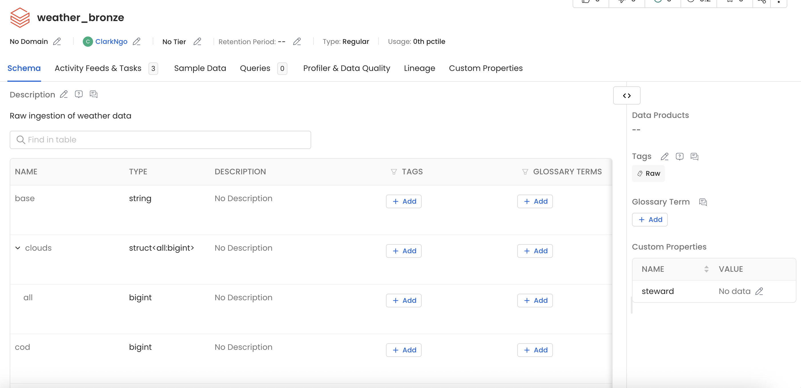
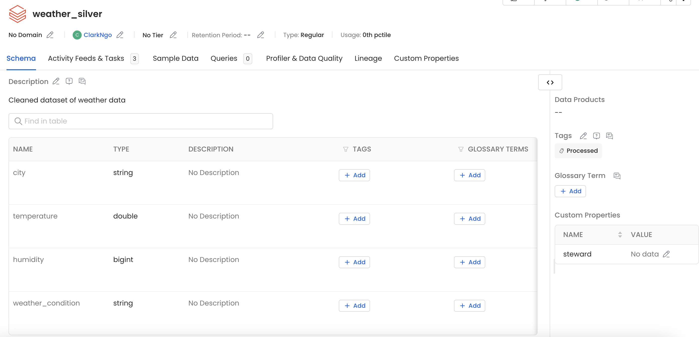
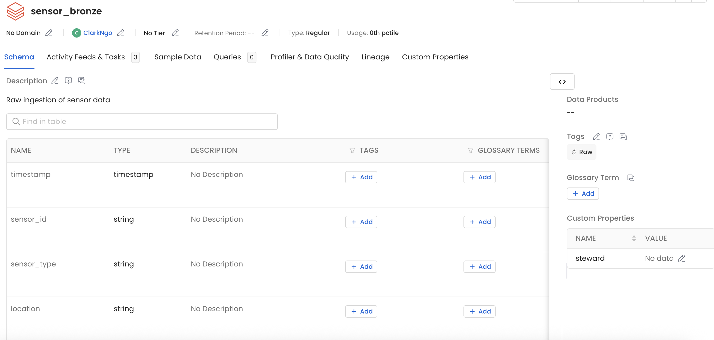
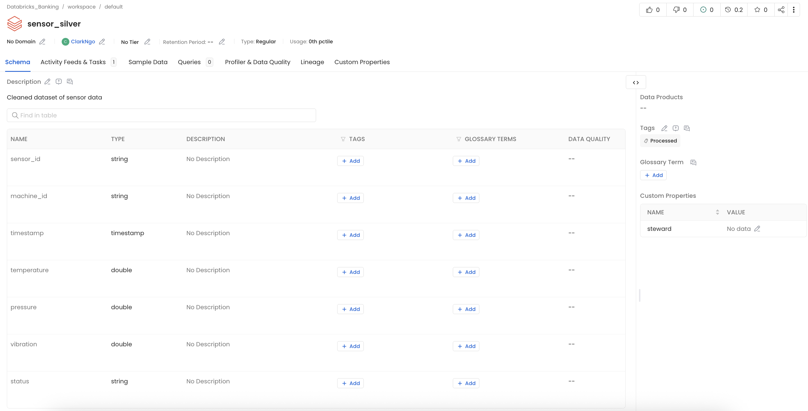

Data Ingestion & Medallion Architecture — SmartFactory IoT Case Study — Clark Ngo
| base | clouds | cod | coord | dt | id | main | name | sys | timezone | visibility | weather | wind |
|---|---|---|---|---|---|---|---|---|---|---|---|---|
| stations | {all: 100} | 200 | {lat: 47.6062, lon: -122.3321} | 1778434380 | 5809844 | {feels_like: 286.96, grnd_level: 1008, humidity: 78, pressure: 1018, sea_level: 1018, temp: 287.44, temp_max: 288.55, temp_min: 286.21} | Seattle | {country: US, id: 2009669, sunrise: 1778416705, sunset: 1778470386, type: 2} | -25200 | 10000 | [{description: overcast clouds, icon: 04d, id: 804, main: Clouds}] | {deg: 210, speed: 2.06} |
| city | temperature | humidity | weather_condition |
|---|---|---|---|
| Seattle | 287.44 | 78 | overcast clouds |
| sensor_id | machine_id | timestamp | temperature | pressure | vibration | status |
|---|---|---|---|---|---|---|
| S-1000 | M-300 | 2026-01-01T00:00:00.000Z | 81.09 | 5.29 | 4.73 | Maintenance |
| S-1001 | M-100 | 2026-01-01T00:15:00.000Z | 53.65 | 2.75 | 4.32 | Running |
| S-1002 | M-300 | 2026-01-01T00:30:00.000Z | 93.3 | 2.4 | 3.82 | Running |
| S-1003 | M-300 | 2026-01-01T00:45:00.000Z | 87.66 | 8.88 | 3.96 | Warning |
| S-1004 | M-300 | 2026-01-01T01:00:00.000Z | 35.94 | 9.98 | 2.44 | Maintenance |
| S-1005 | M-400 | 2026-01-01T01:15:00.000Z | 92.9 | 4.47 | 1.36 | Running |
| S-1006 | M-400 | 2026-01-01T01:30:00.000Z | 91.98 | 5.61 | 0.18 | Warning |
| S-1007 | M-500 | 2026-01-01T01:45:00.000Z | 74.92 | 1.21 | 4.99 | Idle |
| S-1008 | M-500 | 2026-01-01T02:00:00.000Z | 36.99 | 3.51 | 4.65 | Running |
| S-1009 | M-100 | 2026-01-01T02:15:00.000Z | 30.9 | 3.21 | 4.08 | Running |
| sensor_id | machine_id | timestamp | temperature | pressure | vibration | status |
|---|---|---|---|---|---|---|
| S-1000 | M-300 | 2026-01-01T00:00:00.000Z | 81.09 | 5.29 | 4.73 | Maintenance |
| S-1001 | M-100 | 2026-01-01T00:15:00.000Z | 53.65 | 2.75 | 4.32 | Running |
| S-1002 | M-300 | 2026-01-01T00:30:00.000Z | 93.3 | 2.4 | 3.82 | Running |
| S-1003 | M-300 | 2026-01-01T00:45:00.000Z | 87.66 | 8.88 | 3.96 | Warning |
| S-1004 | M-300 | 2026-01-01T01:00:00.000Z | 35.94 | 9.98 | 2.44 | Maintenance |
| S-1005 | M-400 | 2026-01-01T01:15:00.000Z | 92.9 | 4.47 | 1.36 | Running |
| S-1006 | M-400 | 2026-01-01T01:30:00.000Z | 91.98 | 5.61 | 0.18 | Warning |
| S-1007 | M-500 | 2026-01-01T01:45:00.000Z | 74.92 | 1.21 | 4.99 | Idle |
| S-1008 | M-500 | 2026-01-01T02:00:00.000Z | 36.99 | 3.51 | 4.65 | Running |
| S-1009 | M-100 | 2026-01-01T02:15:00.000Z | 30.9 | 3.21 | 4.08 | Running |
weather_bronze, sensor_bronze) retain the full original structure — nested JSON fields for weather, complete sensor rows including nulls. Processed-tagged tables (weather_silver, sensor_silver) expose only the clean, flattened, analysis-ready columns.




dropna()
weather_raw.json stored to Volume with the full nested API response — coord, sys, wind structs all retained.weather_silver with exactly 4 clean columns — city, temperature, humidity, weather_condition. No structs, no nested arrays.spark.read.json() reads weather_raw.json with no schema declared — Spark infers types at query time.silver_df uses an explicit .select() with .alias() — the output schema is defined before the write, not discovered after.sensor_bronze keeps the null fault row — an ML model detecting anomalies needs to see those readings, not a cleaned version.sensor_silver is what a dashboard queries — clean rows, no nulls, ready for COUNT/AVG without pre-processing.| Layer | Technology | What Enters | Governance Role |
|---|---|---|---|
| Sensors / API | IoT hardware (temperature, fault sensors), OpenWeather REST API | Raw readings: temperature, humidity, fault codes, wind speed, AQI | Data origin — no governance enforcement here; records what the physical world produced |
| Ingestion | Databricks notebooks (PySpark), Volumes for CSV; simulated API calls for weather | JSON API response, CSV sensor files uploaded to /Volumes/workspace/default/Volume/ |
Entry point into the governed pipeline; source metadata captured (file name, timestamp, row count) |
| Bronze Layer | Databricks Delta table (weather_bronze, sensor_bronze) |
All original fields including nulls, timestamps, and raw sensor faults (S005 retained) | Immutable source of truth. Never transformed. Enables replay if Silver logic changes. OpenMetadata Bronze tag confirms raw provenance. |
| Silver Layer | Databricks Delta table (weather_silver, sensor_silver) |
Cleaned records: timestamp dropped from weather; null fault rows removed from sensors via dropna() |
Quality gate. Downstream analytics only query Silver+. OpenMetadata Silver tag signals data is safe to use for reporting. |
| Gold Layer | Databricks Delta table (not built in this lab — future module) | Pre-aggregated business metrics: average temperature per zone, daily fault rate, uptime % | Business-ready aggregates. Feeds dashboards without per-query computation. OpenMetadata Gold tag confirms production-ready status. |
| Catalog | OpenMetadata (connected to Databricks via connector) | All table schemas, row counts, column lineage, Medallion tags | Governance layer. Makes the pipeline self-documenting: every table has a tag explaining what it contains and which layer it belongs to. Enables audit trail. |
| Dashboard | Databricks SQL, Power BI, or Tableau (future integration) | Gold aggregates queried via SQL | Consumption layer — reads only from Gold; never touches Bronze or Silver directly |
/Volumes/workspace/default/Volume/weather_raw.json before loading into Spark, preserving the full nested structure as the Bronze record.fault_code. This row is kept in sensor_bronze because Bronze is the evidence layer — removing it would destroy the audit trail for the malfunctioning sensor event..write.mode("overwrite").saveAsTable() for all 4 tables — no .format("parquet") or .format("delta"). Databricks defaults to Delta, so specifying a format is either wrong (parquet breaks DML) or redundant (delta is already the default).saveAsTable() is the required step before any D2 screenshot can be taken.weather_bronze Raw, weather_silver Processed, sensor_bronze Raw, sensor_silver Processed.